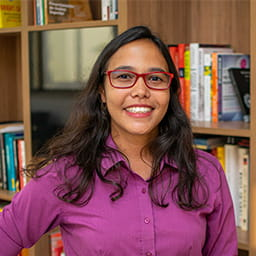

Daniela Lubke
Pesquisadora
Sobre:
Atualmente sou pesquisadora no
IDados onde aplico técnicas de otimização para resolver problemas reais.
Em 2019, finalizei meu doutorado no
Programa de Engenharia de Sistemas e Computação
da Universidade Federal do Rio de Janeiro, supervisionada pela Prof. Marcia Fampa.
Estou interessada em otimização combinatória, programação semidefinida, programação não linear inteira mista e aprendizado de máquina.
More about me

D.Sc. em Engenharia de Sistemas e Computação, 2019.
Universidade Federal do Rio de Janeiro - UFRJ.
M.Sc. em Engenharia de Sistemas e Computação, 2014.
Universidade Federal do Rio de Janeiro - UFRJ.
Licenciatura Plena em Matemática, 2011.
Universidade Rural Federal do Rio de Janeiro - UFRRJ.
Desde 2018, trabalho como pesquisadora no
IDados, onde desenvolvo modelos de otimização para resolver problemas reais. Minha principal atribuição é propor soluções
para ajudar na gestão e otimização de redes escolares.
Em minhas pesquisas aplico técnicas de otimização com o objetivo de dimensionar a quantidade de escolas e de professores para atender a demanda da rede e otimizar o
transporte escolar.
Em Janeiro de 2020, meu artigo "Parametric Convex Quadratic Relaxation of the Quadratic Knapsack Problem",
foi selecionado entre os artigos de destaque do European Journal of Operational Research.
As principais contribuições deste trabalho são as novas desigualdades derivadas de desigualdades de cobertura e das desigualdades de mochila e foram testadas no problema quadrático da mochila 0-1.
Estas desigualdades podem ser aplicadas aos problemas quadráticos indefinidos binários mais gerais.
Durante meu doutorado, em 2017, desenvolvi parte de minha pesquisa na Universidade de Waterloo, onde fui orientada pelo Prof. Henry Wolkowicz e trabalhei em conjunto com Fei Wang.
Linhas de Pesquisa
- Otimização Combinatória
- Programação Semidefinida
- Programação Não Linear Inteira Mista
- Aprendizado de Máquina
ADMM for the SDP relaxation of the QAP and QKP
XIX International Conference on Integer Programming and Combinatorial Optimization - IPCO.
Julho de 2017 - Waterloo, Canada.
Upper bounds for the binary quadratic knapsack problem
XLVII Simpósio Brasileiro de Pesquisa Operacional - SBPO.
Agosto de 2015 - Porto de Galinhas, Pernambuco.
Covering of Solid Bodies by Spheres via Flying Elephants Method
11th Metaheuristics International Conference - MIC.
Junho de 2015 - Agadir, Marrocos.
Solving Medium and Large Size Problems of the Literature by the Accelerated Hyperbolic Smoothing Clustering Method
XLVI Simpósio Brasileiro de Pesquisa Operacional - SBPO.
Setembro de 2014 - Salvador, Bahia.
Solution of the Problem of Covering Solid Bodies by Spheres using the Hyperbolic Smoothing Technique
XLVI Simpósio Brasileiro de Pesquisa Operacional - SBPO.
Setembro de 2014 - Salvador, Bahia.
Outras informações podem ser encontradas no meu
Currículo Lattes.
- Fampa, M.; LUBKE, D.; WANG, F.; WOLKOWICZ, H. Parametric Convex Quadratic Relaxation of the Quadratic Knapsack Problem. European Journal of Operational Research, v. 1, p. 1, 2020.
https://doi.org/10.1016/j.ejor.2019.08.027
Este artigo foi selecionado entre os destaques de Janeiro do European Journal of Operational Research: EJOR Editors’ Choice
Articles, January 2020 - Highlighted Articles: https://www.journals.elsevier.com/european-journal-of-operational-research/highlighted-articles/ejor-editors-choice-articles-january-2020
- LUBKE, DANIELA CRISTINA; XAVIER, VINICIUS LAYTER; VENCESLAU, HELDER MANOEL; XAVIER, ADILSON ELIAS. Flying elephants method applied to the problem of covering solid bodies with spheres, Int. J. Metaheuristics, Vol. 7, No. 1, 2018.
https://doi.org/10.1504/IJMHEUR.2018.091868
- VENCESLAU, HELDER MANOEL; LUBKE, DANIELA CRISTINA; XAVIER, ADILSON ELIAS. Optimal covering of solid bodies by spheres via the hyperbolic smoothing technique, Optimization Methods and Software, v. 1, p. 1-13, 2014.
https://doi.org/10.1080/10556788.2014.934686
Artigos apresentados em conferências
- COSTA, M.; FAMPA, M.; LUBKE, D. C.; Upper bounds for the binary quadratic knapsack problem, Publicado em anais do XLVII Simpósio Brasileiro de Pesquisa Operacional, 2015, Porto de Galinhas, Pernambuco.
http://www.din.uem.br/sbpo/sbpo2015/pdf/142864.pdf
- LUBKE, DANIELA CRISTINA; VENCESLAU, HELDER MANOEL; XAVIER, ADILSON ELIAS. Solution of the Problem of Covering Solid Bodies by Spheres using the Hyperbolic Smoothing Technique, Publicado em anais do XLVI Simpósio Brasileiro de Pesquisa Operacional, 2014, Salvador, Bahia. v.1 p. 2686-2694.
http://www.din.uem.br/sbpo/sbpo2014/pdf/arq0388.pdf
- LUBKE, D. C.; XAVIER, A. E.; OLIVEIRA, A. A. F.; XAVIER, V. L. Cobertura de corpos por esferas utilizando suavização hiperbólica. Publicado em anais do XLV Simpósio Brasileiro de Pesquisa Operacional, 2013, Natal. v.1 p. 2658-2665.
http://www.din.uem.br/sbpo/sbpo2013/pdf/arq0295.pdf
Resumos publicados em congressos
- Fampa, Marcia; LUBKE, DANIELA CRISTINA; Wang, Fei; Wolkowicz, Henry. Extending cover inequalities for the quadratic knapsack problem to relaxations in lifted space. XIX Latin-Iberoamerican Conference on Operations Research - CLAIO 2018.
http://www.sopios.org.pe/static/claio/proceeding.pdf
- M. Fampa, D. Lubke, F. Wang, H. Wolkowicz, “Convexification of the Quadratic Knapsack Problem with Integrated Cut Strengthening”.
Oberwolfach Reports 26 (2019),pp. 19-21. (Proceedings of the workshop on Mixed-integer Nonlinear Optimization: ahatchery for modern mathematics,
Mathematisches Forschungsinstitut, Oberwolfach,Germany, 2019). DOI: 10.4171/OWR/2019/26
- VENCESLAU, HELDER MANOEL; LUBKE, DANIELA CRISTINA; XAVIER, ADILSON ELIAS. The Hyperbolic Smoothing Technique applied to the covering of three dimensional bodies by spheres, 2014, Perpignan, France, June 26-28, Book of Abstracts of EUROPT-2014, v. 1. p. 33-33.
- XAVIER, A. E. ; OLIVEIRA, A. A. F. ; LUBKE, D. C. ; XAVIER, V. L. Optimal Covering of a Solid Body via Hyperbolic Smoothing Technique, 2013, Florence, Italy, June 26-28, Annals EUROPT 2013. v. 1. p. 31-31.


{kind=link}
{kind=link}
{kind=link}